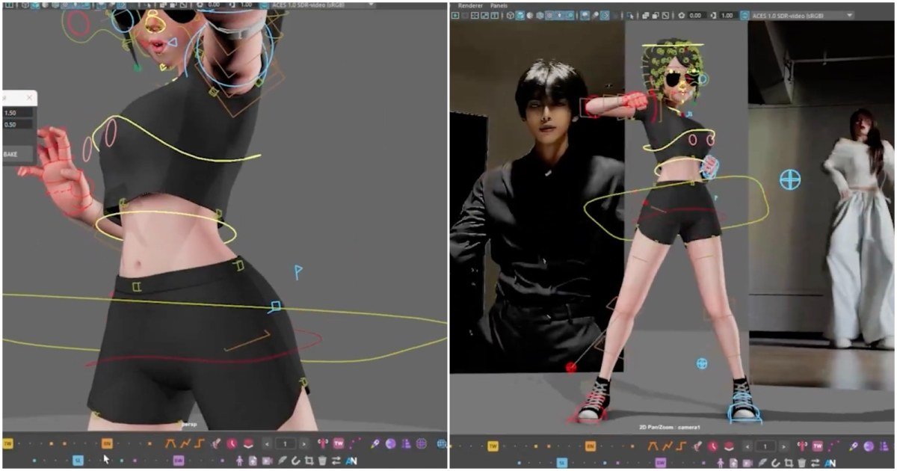

Animo v10 把 500+ Maya Animation Tools 收進同一套工具箱
Animo v10 新增直接在 Maya 內加入影片/GIF/圖片 reference、六個 animation sliders 與 Tools Editor，可集中存取超過 500 個動畫工具並綁 hotkey/shelf。

★★★★☆
完整分析
動作製作流程
工具價值在於把零散 animator utilities 收斂成可搜尋、可 hotkey、可 shelf 的統一入口，降低重複操作與工具切換。
製作價值
reference media 直接進 Maya 對 blocking/polish 對照很實用；animation sliders 則值得看是否能穩定處理 pose、timing 或 curve 編輯。
導入測試
導入前先測 scene contamination、namespace/reference 相容、undo 穩定性與大型 rig 效能，再決定是否納入團隊標準 shelf。